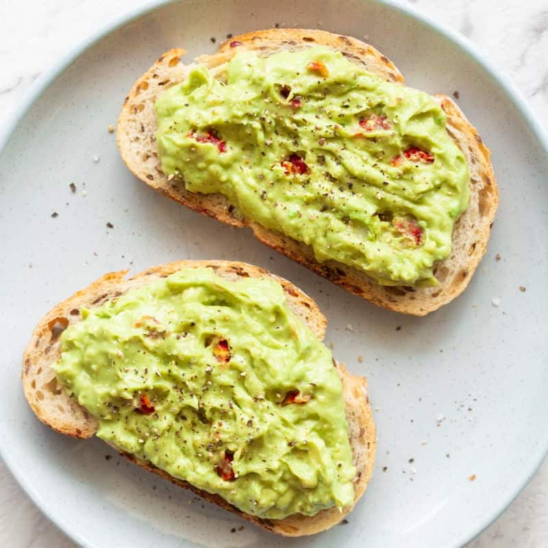

A beautiful avocado toast that you can eat anytime.
Description
This recipe's main ingredient is surprise, avocado! You will need to make sure that the avocado you use is ripe. You can tell the ripeness of your avocado by:
Does the body of the avocado feel really firm? If so, it's not ripe. It should feel like it is soft but not too soft (else that avocado is too far gone).
See where the end has a stem? If it feels soft there and the stem falls off easily, it is probably ripe.
If your avocado is not yet ripe, place it in a paper bag with an apple for a day or 2. The ethylene gas will help speed up the process.
Ingredients
(Serves 1 person)
1 ripe avocado
2 pieces of toast, I prefer using sourdough bread
lime juice (about 1/2 to 1 whole lime, depends on how big your avocado is)
garlic powder
red chili flakes (optional)
salt and pepper to taste
Steps
Heat a pan that is nonstick and has a tall side. You need this so that when stirring the eggs, they don't spill over on the side. Put a tbsp of butter and a tbsp of olive oil in the pan. Heat up well and melt over medium heat.
Pour the beaten eggs into the heated pan. Let sit for about 30 seconds so that they set a little bit. Then using a silicone spatula, start mixing the egg. Take off heat and keep mixing.
Alternate between putting the pan on the heat and taking off the heat while stirring. You want the egg to cook but not be too firm or rubbery.